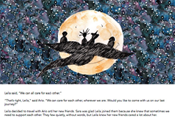
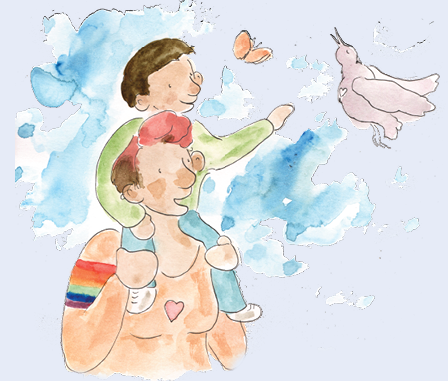

KEY MESSAGE 7 Living with heartache
CHAT 7
Let’s CHAT
Leila asked a question that is difficult to answer. She asked, “Is it true some people die from the coronavirus.”
Ario answered Leila’s questions, “Yes, some people die from Covid-19.”
I prefer that your life never includes any heartache. I, along with your whole family and everyone who loves you, will do everything we can to protect you. Sadly, death is a part of life and affects all of us. I am unable to protect you from experiencing death. This is one of the realities in all our lives that causes us heartache. Our lives take many turns and twists and I am here to help you to manage them.
Yes, some people do die from COVID-19. Most often they are people who are older or people who are already sick with another disease. We must be extra careful to protect these people from getting infected. Sometimes, mums, dads or big brothers, sisters or even children die from COVID-19. It does not happen often, but it can happen. Even when we are careful, sometimes people still get sick and die. No one is to blame. It is no one’s fault. Having people we love die is something we will all experience at some time in our lives.
When someone dies, it really helps to talk about how we feel to someone who cares about us. We can hug each other. We can share the stories of our memories about the people who died. When people die, we miss them. By sharing memories when we were happy together, we can remember these people and keep them alive in our hearts.
Now, we will learn the way Ario suggested to Sara, Salem and Leila manage their feelings when they feel sad or scared or unsafe. Ario suggested they imagine inside their minds the look, feel, smell of a place that once made them happy. Ario thought that imaging a guest to go with you to this place could help you feel better. Your guest can be anyone you choose. So, think of who you want to take to that place with you. I suggest that we add a few deep breathes to all this imagining like we learned earlier to relax.
This imagining can help us when we are sad or anxious. Right now, we are enjoying a story and feel good. So, let me remind you of the creepy coronavirus with all its legs. That makes all of us a little scared.
Let’s CHAT
Now, we will try to manage our anxious feeling. Please, close your eyes. Let’s start with our breathing.
Slowly, as I count, take a deep breath 1...2...3...4...5. Hold your breath 1…2. …3.… Slowly, as I count, release your breath 1….2….3….4...5….
Remember a memory of a time when you felt safe. Imagine a picture in your head of how it looked, remember how you felt in that place even remember how it smelled. Now, imagine you bring your guest to that safe place with you. Let yourself feel safe. Now, imagine a happy time in that place with your guest. Imagine that you smile at your guest.
Slowly, as I count, take a deep breath 1….2….3….4...5…. Hold your breath 1….2….3…. Slowly, as I count, release your breath 1….2….3….4...5….}
Remember, I am here to help keep you safe. Whenever you feel unhappy, scared, confused, remember we can always CHAT.
Let’s open our eyes. Let’s come back from our imagining to each other and Leila, Sara, Salem, and Ario. In our storybook, Ario told Leila that he and many other people care about her and Sara and Salem. Let’s read what Leila’s answers.
> Read these pages of My Hero is You

